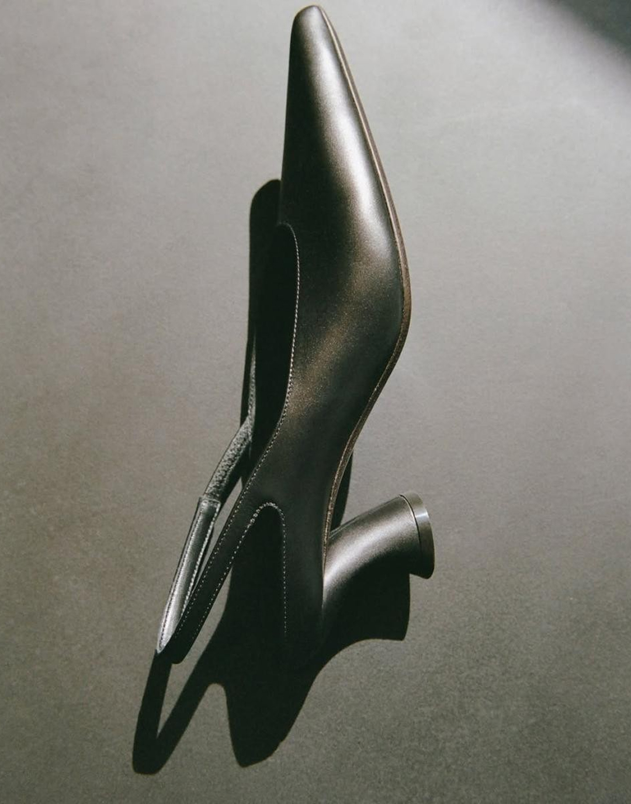

Redefining Canvas Exploring the Boundless Boundaries of Contemporary Art.
Contemporary art serves as a dynamic mirror to our rapidly evolving
world, challenging traditional aesthetics and encouraging deep
intellectual engagement. Rather than remaining confined to classic
mediums, modern creators boldly blend digital media, found objects,
and immersive installations to question societal norms, identity,
and global narratives. By prioritizing conceptual depth over rigid
technique, contemporary artistic expressions invite viewers to
become active participants, transforming passive observation into a
vibrant, open-ended conversation about the human experience today.


Echoes of Expression Unveiling the Fluid Narrative of Modern Aesthetics.
Contemporary art pushes beyond physical form, shifting the focus
from static representation to living, breathing experiences. Through
provocative performance, interactive sculpture, and multisensory
environments, artists tear down the invisible barrier between the
artwork and the observer. This fluid approach transforms traditional
galleries into spaces of active reflection, where diverse cultural
perspectives collide, provoke thought, and inspire new ways of
understanding our shared reality.
Beyond the Frame Reimagining Visual Language in Contemporary Art.
Contemporary art redefines how we interpret reality by breaking free
from traditional rules and conventional mediums. Artists blend
digital innovation, raw textures, and spatial design to build
immersive visual experiences that resonate on an emotional and
intellectual level. Each piece acts as an open dialogue, inviting
observers to look beneath the surface, question established ideas,
and discover personal meaning within a constantly shifting artistic
landscape.